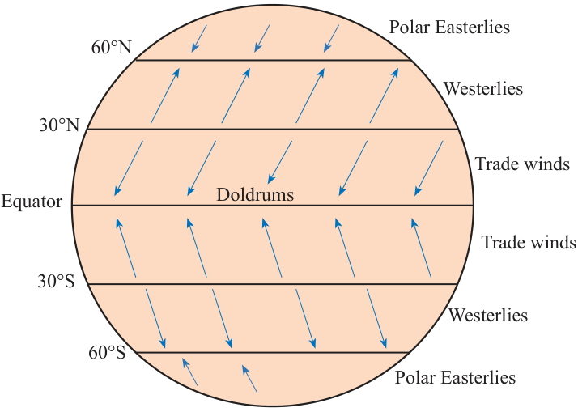

(iii) Gain or loss of a day
This effect is primarily related to crossing the International Date Line. One will lose a day when crossing the International Date Line (IDL) from the East to the West, and will gain a day when crossing the IDL from the West to the East. International Date Line is an imaginary line that runs from the North Pole to the South Pole. It follows Meridian 180° except where it crosses land surfaces to avoid confusion. If the Earth would not be rotating, there would be neither gaining nor losing of a day while crossing the IDL.
(iv) Deflection of winds and ocean currents
The earth’s rotation causes deflection of planetary winds and ocean currents. This means that they do not blow and flow straight. The planetary winds and ocean currents are deflected to the right in the northern hemisphere and to the left in the southern hemisphere (Figures 3.3a and b). This is based on Ferrel’s Law, which states that “freely moving bodies are deflected to their right in the northern hemisphere and to their left in the southern hemisphere from their point of origin”.
